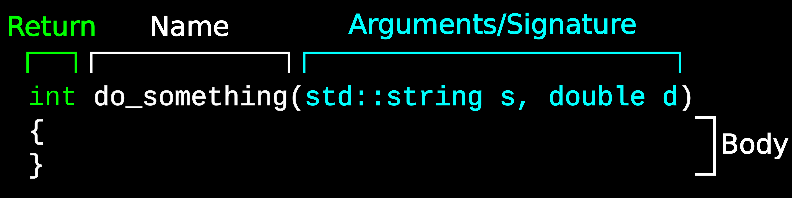

First C++ Program#
Overview
Questions:
How do I write and compile a minimal C++ program?
What are the basic constructs of C++?
How do I handle compile errors?
Objectives:
Be able to write and build a minimal C++ program
Be able to debug compiler errors
Prerequisites
Installed a C++ compiler
Familiarity with command line and text editor
Hello world in C++#
Now, lets begin by writing our first C++ program, and the compiling and running it.
First, we will begin with a program that does absolutely nothing. Start by
creating a new directory for your C++ project, and creating a plain text file
with the name hello_world.cpp.
File extensions
C++ source files commonly end in .cpp, which is the convention we will use. However,
other people have different conventions: .cxx is other common extension. Compilers will
generally understand either extension to mean C++ source
// hello_world.cpp
int main(void)
{
return 0;
}
This is basically the bare minimum of a C++ program. Lets take a look at this in detail
This defines a function called
main. It returns anint(integer) and takes no arguments (void)The function body is enclosed in curly braces.
It simply returns the integer 0 to outside the function
the main function is very important. It defines the first function that
is called by the operating system. That is, by running the executable we
will create, the main function is the starting point of our code.
Building our executable#
Save the hello_world.cpp file. We will now build our executable. In general,
it is easier to have two windows open - one with your code editor, and one
for compiling.
In whatever terminal you are going to use to build your executable, we are going to run the following command:
g++ hello_world.cpp -o hello_world
The command is g++, which will both compile and link your code. -o hello_world specifies the
final output name for our executable.
If successful, there will be no output from g++, and there will be a new
file in the directory called hello_world.
If you try running hello_world, nothing will happen! That is because we don’t have
any code that does anything.
Now lets make our code actually do something
Printing to the standard output#
Unlike python, C++ does not have a way of printing to the terminal built into the language! To do so, you must use an external library. Fortunately, the C++ standard contains details about the C++ Standard Library, containing many useful functions, including printing. This is similar to Python’s standard library, however it does not contain as much functionality.
In order to use features of the standard library, you must #include
the appropriate files. This is conceptually similar to the Python import
statement - it allows you to use code defined somewhere else in the current
file.
Printing to standard output is done via the std::cout object (pronounced
see-out) and by using the << (stream insertion) operator. These are
found in the iostream file that is part of the standard library.
Namespaces
You will notice that when we use pieces of the standard library, we will prefix them
with std::. C++ allows you to group functions, etc, into namespaces. These are conceptually
similar to python modules (with many differences of course). You tell the compiler which namespace
a function or object belongs to with the :: operator (called the scope resolution operator).
Details about namespaces are beyond the scope of this course (pun intended).
#include <iostream>
int main(void)
{
std::cout << "Hello, world!";
return 0;
}
Now save and build this file the same way you did before. Running it will
now print Hello, world! to the terminal.
g++ hello_world.cpp -o hello_world
./hello_world
You will notice that it does not put a newline afterwards (as Python does), causing it to be on the same line as your prompt.
The solution to this is to place and endline character after the Hello, world!. There are several different ways to do this, but we will stick with
using std::endl (for endline) from the standard library.
#include <iostream>
int main(void)
{
std::cout << "Hello, world!" << std::endl;
return 0;
}
Notice that we can keep inserting into std::cout by chaining together << operators.
If you build and run this executable again, the output should go where you expect.
g++ hello_world.cpp -o hello_world
./hello_world
Single vs. Double quotes
Python does not differentiate between single and double quotes for strings.
C/C++ does. Double quotes represent a string, while single quotes represent
a single character. Single quotes are much less common than double quotes.
So "this is a string" is a string, and 'a' is a single character. Something
line 'this is a string' does not make any sense, and should result in a
compiler warning or error.
Exercise
Modify the main function so that it says “Hello, {yourname}” on a new line below “Hello, world!”
Solution
Two possible solutions are shown below
#include <iostream>
int main(void)
{
std::cout << "Hello, world!" << std::endl;
std::cout << "Hello, Ben!" << std::endl;
return 0;
}
#include <iostream>
int main(void)
{
std::cout << "Hello, world!" << std::endl << "Hello, Ben!" << std::endl;
return 0;
}
Functions#
Functions in C++ are similar to functions in Python - they are reusable pieces of code that take arguments as input and return data. They can be used (called) from other pieces of code.
C++ developers love to be picky about terminology; it is often necessary to be precise when talking about a language as complex as C++. In the following figure we introduce some terminology related to functions in C++.
The return type is specified before the function name (and can be on its own
line if necessary). Following the name is the function signature, which details
the types and names of the arguments. After that, the function body is enclosed
in curly braces, just like we say with the main function.
Lets move our printing of “Hello, World!” to a separate function and call that
from main. We will also have it take a string argument, so rather than saying
“Hello” to the whole world, we will be a bit more specific.
#include <iostream>
void say_hello(std::string name)
{
std::cout << "Hello, " << name << "!" << std::endl;
}
int main(void)
{
say_hello("Dr. Pritchard");
say_hello("Dr. Nash");
return 0;
}
The output should be
Hello, Dr. Pritchard!
Hello, Dr. Nash!
Here, our say_hello function takes an std::string. These can be output
to the screen via std::cout like before.
Conditional statements#
Conditional (if) statements are similar to those in Python, except:
The conditional expression is placed in parentheses
and/orare often replaced by symbolselifin Python is simplyelse ifin C++.
The general template for if/else is
if(condition1)
{
//{code}
}
else if(condition2)
{
//{code}
}
else
{
//{code}
}
In C++, it is often customary to use || for or and && for and.
Other than that, they behave exactly the same as in Python.
#include <iostream>
void say_hello(std::string name)
{
if(name == "Dr. Pritchard" || name == "Dr. Nash")
{
std::cout << "Hello, " << name << " (from MolSSI)" << std::endl;
}
else if(name == "Dr. Drummond")
{
std::cout << "Hello, " << name << " (from Berkeley)" << std::endl;
}
else
{
std::cout << "Hello, " << name << " (from parts unknown)" << std::endl;
}
}
int main(void)
{
say_hello("Dr. Pritchard");
say_hello("Dr. Nash");
say_hello("Dr. Drummond");
return 0;
}
Notice that when doing comparisons, Two equal signs are used (==). This is the same in
Python. A single equal sign is used for assignment.
Exercise
Modify the say_hello function to account for your name and location.
Solution
#include <iostream>
void say_hello(std::string name)
{
if(name == "Dr. Pritchard" || name == "Dr. Nash")
{
std::cout << "Hello, " << name << " (from MolSSI)" << std::endl;
}
else if(name == "Dr. Drummond")
{
std::cout << "Hello, " << name << " (from Berkeley)" << std::endl;
}
else if(name == "Your name")
{
std::cout << "Hello, " << name << " (from Cool Place)" << d::endl;
}
else
{
std::cout << "Hello, " << name << " (from parts unknown)" << std::endl;
}
}
int main(void)
{
say_hello("Dr. Pritchard");
say_hello("Dr. Nash");
say_hello("Dr. Drummond");
say_hello("Your name");
return 0;
}
For loops#
for loops are another basic building block of programming. They are a
little different in C++; in C++, the basic for loop has a few different parts in C++
This is the general form, however there is great flexibility that can be exploited for may other reasons.
The increment/decrement operator
C++ has an increment (++) and decrement (--) operator that Python does not have.
These are equivalent to += 1 and -= 1 in Python. And now you know where the
name C++ comes from.
Let’s write a for loop that calls our simpler say_hello function a number
of times.
#include <iostream>
void say_hello(std::string name)
{
std::cout << "Hello, " << name << "!" << std::endl;
}
int main(void)
{
for(int i = 0; i < 10; i++)
{
say_hello("Dr. Pritchard");
}
return 0;
}
Exercise
Modify the say_hello function so that it takes an additional argument specifying
the number of times it has been called (that is, the i variable from the main
function. It then prints that before the “Hello”.
Solution
#include <iostream>
void say_hello(std::string name, int count)
{
std::cout << count << ".) Hello, " << name << "!" << std::endl;
}
int main(void)
{
for(int i = 0; i < 10; i++)
{
say_hello("Dr. Pritchard", i);
}
return 0;
}
While loops#
while loops are very similar in C++ and python, except the the conditional
is again placed in parentheses.
The following is equivalent to the previous for loop.
#include <iostream>
void say_hello(std::string name)
{
std::cout << "Hello, " << name << "!" << std::endl;
}
int main(void)
{
int i = 0;
while(i < 10)
{
say_hello("Dr. Pritchard");
i++;
}
return 0;
}
Continue and break#
There are two important flow control keywords used inside for and while loops.
The continue keywords stops execution of the body and starts a new iteration
from the beginning of the body, and break exits the loop immediately,
with execution continuing on the statement after the loop.
The example below shows the use of these keywords in a for loop,
but they work exactly the same in a while loop.
#include <iostream>
int main(void)
{
int i = 0;
// Print only even numbers, up to 18
for(int i = 0; i < 200; i++)
{
// if i is odd, then continue to the next iteration
if(i % 2 == 1)
{
continue;
}
// print the number. This only gets run if
// i is even
std::cout << i << std::endl;
// if i is 18, break out of the loop
if(i == 18)
{
break;
}
}
std::cout << "Loop done!" << std::endl;
return 0;
}
A Pitfall for Python Programmers#
In C++, conditional statements, for loops, and while loops introduce a new
scope. Variables declared within these scopes cannot be accessed outside of
the conditional or loop. This is allowed in Python, and is a common mistake
in programmers moving from Python to C++.
int main(void)
{
for(int i = 0; i < 10; i++)
{
std::string name = "Ben";
std::cout << "Hello, " << name << std::endl;
}
// Error: name is undeclared here!
std::cout << "Bye, " << name << std::endl;
return 0;
}
In this example, the name variable is declared inside the body of the for
loop, and cannot be access from outside that loop. This is in contrast to
Python, where such access is allowed.
With for loops, the variable declared in the parentheses (in this case, i)
are also only available inside the loop body, and not outside it.
Compiler Errors#
If there is a problem with your code, the compiler will print an elaborate error message. Interpreting these error messages can take experience and intuition, as the message is not always the most helpful (although things are improving in this area).
As a rule of thumb, I usually follow this workflow when dealing with errors:
Read the output from top to bottom (may require scrolling up in your terminal)
Fix the first error found
Build again
If more errors, go to step 1.
Often, a single error will cascade, causing more errors further down in the code; it is possible that what looks like many errors are caused by a single small error. Therefore, fixing errors one-at-a-time and then rebuilding is usually a good approach, especially as you begin building experience. With time, you will be able to spot batches of errors that can be fixed at once.
C++ Compiler Error Contests
C++ compilers are known having very verbose, incomprehensible error messages. There are actually contests to see how you can get the longest error messages with the shortest amount of code.
Take your original hello_world.cpp and introduce a few errors that you may
inadvertantly run across (if you haven’t done so already). This will help you
recognize what the compiler is telling you in the future. Some good things to
mess up are:
Remove a semicolon
Remove the
#includelineMisspell
iostream,std::cout, ormainForget the second
<<(so that it readsstd::cout << "Hello, world!" std::endl)Replace a
<<with<
The errors you receive depend on the compiler and version of the compiler you are using.
Key Points
C++ must be compiled before it can be run, and can be compiled on the command line
C++ shares many of the same constructs as python (if, for, etc)